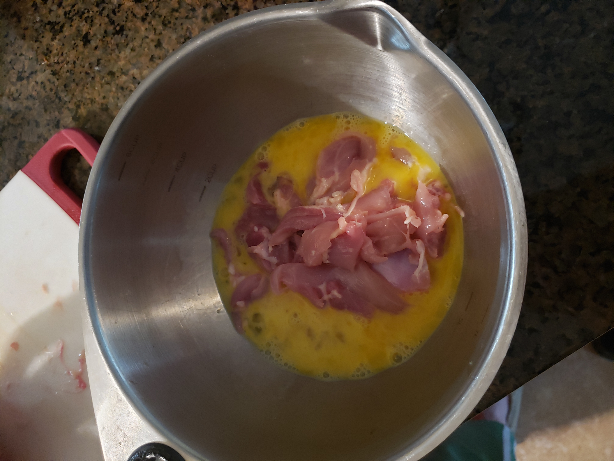
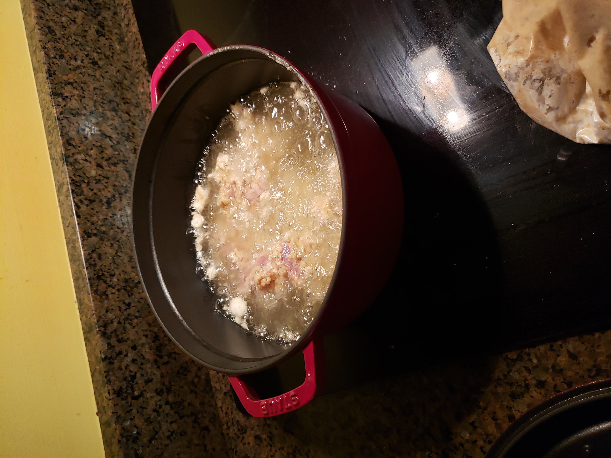
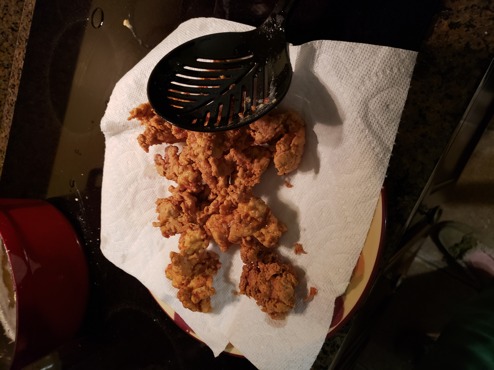

Recipe |
| Step 1 |
| Cut the chicken breasts into bite-sized chunks. Warm the pickle juice in the microwave, in a microwave-safe bowl, until hot to the touch. Stir in the sugar until completely dissolved. Add the chicken chunks and allow them to soak for at least 30 minutes, or overnight. Place in the refrigerator while brining.
 |
| Step 2 |
| Once the chicken has brined in the pickle juice, mix the flour, salt, cornstarch, paprika, garlic powder, and black pepper in a medium bowl. Drain off the pickle juice. Set out a drying/cooling rack and dredge the chicken chunks in the flour. Shake off all excess flour so the coating is very thin. Lay the chicken on the rack. Coat all the chicken pieces before moving on. |
| Step 3 |
Next beat the milk and eggs in a separate bowl. Pour 2 tablespooons of eggwash in the remaining flour mix and work it into little pebbles with your fingers. Dunk the chicken chunks in the eggwash, then dip them back into the flour mixture. Shake off the excess flour and lay them back on the drying rack
 |
| Step 4 |
| Once all the chicken is double-dipped in the flour mixture, pour the oil in a large sauce pot. Turn the heat on medium to medium-high. Place a clip-on thermometer on the side of the pot and bring the temperature up to 350 degrees F |
| Step 5 |
| Once the oil is ready, gently place one-third of the chicken chunks to the hot oil. Stir once, and fry 3-4 minutes until golden brown. Use a spider skimmer to scoop the chicken pieces out of the oil. Place them on a paper towel lined plate. Cut one large piece open to make sure it's cooked through
 |
| Step 6 |
| Allow the temperature to rise back to 350 degrees. Repeat with the remaining chicken pieces two more times. You can keep the fried chicken pieces warm in a 200 degree F oven if you like. |
| Finished |
|  |